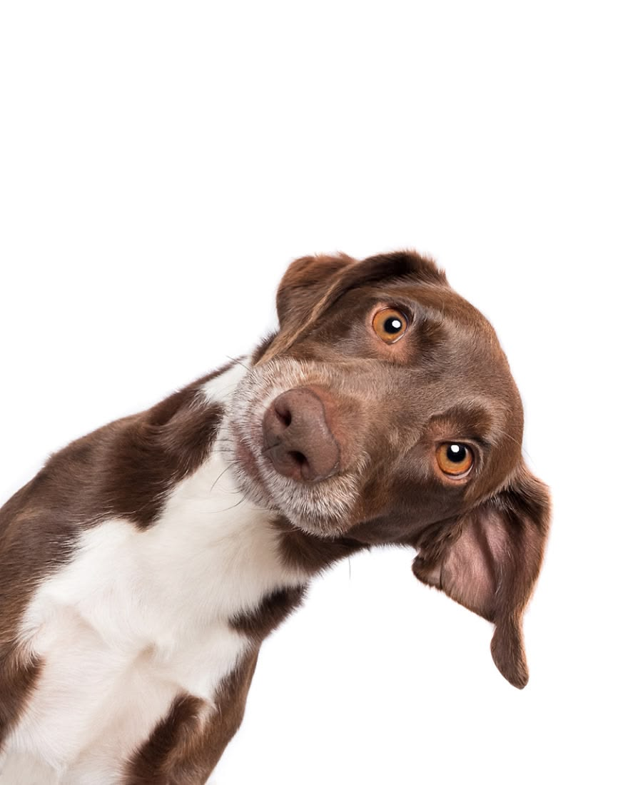

UMA ADOÇÃO RESPONSÁVEL COMEÇA POR AQUI
O amor pode ter quatro patas. E também um novo lar.
Encontre um novo amigo que combine com seu estilo de vida. Uma conexão especial pode estar esperando por você.
Encontrar meu pet

95
Animais acolhidos
71
Adoções realizadas
24
Pets esperando por um lar
CONHEÇA NOVOS AMIGOS
Ver todos os animais →
Talvez o seu match esteja por aqui.


SIMPLES E RESPONSÁVEL
Um encontro. Somente alguns passos. E uma vida toda juntos.
01
Conheça
Explore os perfis e encontre um animal que combine com você e sua rotina.
02
Converse
Preencha o formulário de interesse e conte um pouco sobre seu lar.
03
Prepare-se
Receba orientações e prepare um ambiente seguro para seu novo amigo.

UMA ESCOLHA CONSCIENTE
Carinho começa com responsabilidade.
Adotar é assumir um compromisso com o bem-estar de outro ser. Conheça os cuidados, planeje sua rotina e esteja pronto para oferecer amor e segurança.
Saiba como se preparar
SEU NOVO MELHOR AMIGO
Toda grande amizade começa com um sim.
Descubra os animais que estão esperando por uma família e dê o primeiro passo para uma história especial.
Conhecer os pets